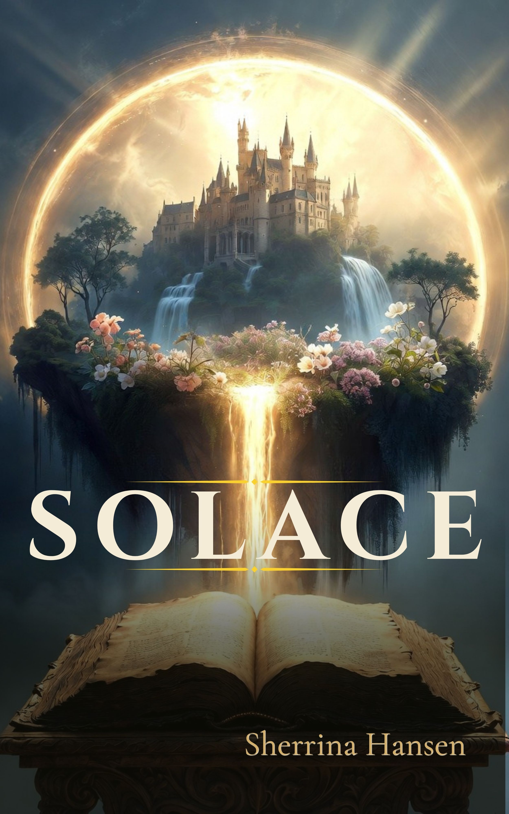

Fantasy novel · Sherrina Hansen
Solace
A devastating diagnosis. A desperate daughter. An unexpected calling.
Solace is real. Mirina has seen it change people, heal people, and bring them back from the edge. She believes it can save her father. She just has to get him there in time.
Read Solace on AmazonMore fantasy from Sherrina Hansen
Solace is my first published fantasy novel, but it won't be the last. You can find my fantasy books here as I add more.